{kind=link}
{kind=link}
Annual Energy Outlook 2017
Full Release Date: January 5, 2017 | Next Release Date: January 2018 | correction | full report
Executive Summary
Projections in the Annual Energy Outlook 2016 (AEO2016) focus on the factors expected to shape U.S. energy markets through 2040. The projections provide a basis for examination and discussion of energy market trends and serve as a starting point for analysis of potential changes in U.S. energy policies, rules, and regulations, as well as the potential role of advanced technologies.
Key issues addressed in the AEO2016 Reference and alternative cases and discussed in this Executive summary include:
- Recent changes in laws and regulations, including the U.S. Environmental Protection Agency’s (EPA) Clean Power Plan (CPP) [1], which requires states to reduce carbon dioxide (CO2) emissions from existing fossil fuel generators, and an extension of tax credits for wind and solar energy. Together with lower natural gas prices, these changes significantly affect the projected electricity generation fuel mix.
- Implications of the changing electricity generation fuel mix for overall coal demand and the coal production outlook across U.S. coal supply regions.
- Slower electricity demand growth and increases in onsite generation, which together determine the demand for generation from central power stations.
- The effects of resource and technology improvements and prices on the outlook for U.S. oil and natural gas production, and the effect of changing production levels on prices projected consumption.
- Implications of the California Air Resources Board’s Zero-Emission Vehicle program [2], which nine states have joined, representing 33% of the total U.S. market for new light-duty vehicles.
- Implications of EPA’s proposed medium- and heavy-duty vehicle Phase 2 standards [3] for CO2 emissions and projected fuel use.
- Implications of alternative economic, energy market, and policy scenarios for energy-related CO2 emissions.
The Clean Power Plan’s requirement to reduce carbon dioxide emissions accelerates the shift in the generation mix
The CPP requirement for states to develop plans to reduce CO2 emissions imposes additional costs on higher-emitting energy sources. Combined with lower natural gas prices and the extension of renewable tax credits, the CPP accelerates the shift toward less carbon-intensive generation. In the AEO2016 Reference case, which includes the CPP, 92 gigawatts (GW) of coal-fired capacity is retired by 2030—32 GW more than is retired by 2030 in the No CPP case, which excludes the CPP. In the Reference case, coalfired generation in 2040 is 32% lower than the 2015 total (Figure ES-1).
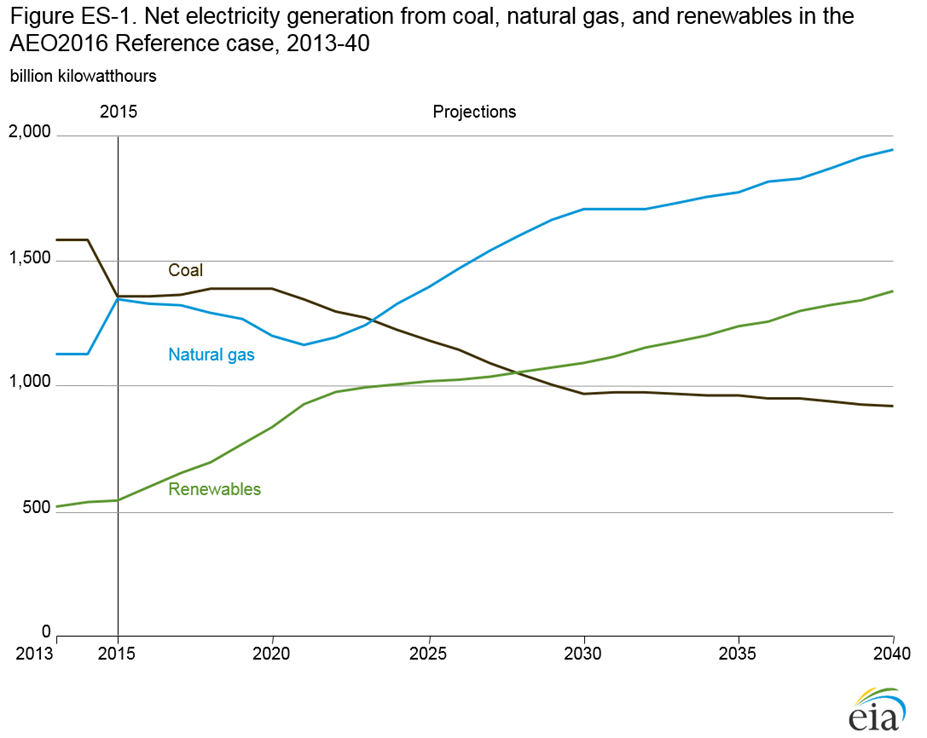
figure data
From 2015 levels, natural gas-fired electricity generation in the Reference case increases by 26% in 2030 and by 44% in 2040, and generation from renewables increases by 99% in 2030 and by 152% in 2040. These projected changes result in electricity generation with both natural gas and renewables surpassing coal generation in 2024 (natural gas) and in 2028 (renewables). In the No CPP case, electricity generation with natural gas does not surpass coal generation until 2029, and renewable generation does not overtake coal-fired generation in the 2015–40 time frame of the projection (Figure ES-2).
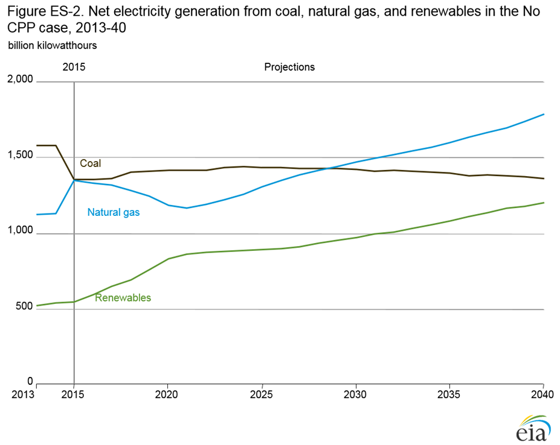
figure data
How the states implement the Clean Power Plan influences its effect on electricity generators
The EPA provides several kinds of flexibility to states in implementing the CPP [4]. This flexibility allows the states to choose between a mass-based approach (with a cap on total CO2 emissions) and a rate-based approach (with a cap on pounds of CO2 emitted per megawatthour of electricity produced), with different potential consequences for electricity generators and customers. In the CPP Rate case, a rate-based target provides a more direct incentive for switching to carbon-free sources of energy by rewarding generators that produce emissions below the intensity target and penalizing those with emissions above the target. The mass-based target in the AEO2016 Reference case, as modeled by EIA, treats every ton of CO2 emitted by fossil-fired generation uniformly, which does not provide the same incentive.
The changes in the mix of generating capacity (including central station and end-use generators) are affected differently by the two implementation approaches. In the CPP Rate case, with a rate-based approach, more renewable capacity is added (an additional 28 GW by 2040) than in the AEO2016 Reference case that assumes mass-based implementation. In the Reference case, 14 GW more coal-fired capacity is retired, and 48 GW more natural gas capacity is added between 2015 and 2040 than in the CPP Rate case.
With the mass-based implementation approach assumed in the Reference case in 2040, coal-fired generation is 436 billion kWh
lower than in 2015; natural gas-fired generation is 594 billion kWh higher than in 2015; and renewable generation is 828 billion
kWh higher than in 2015. With the rate-based approach adopted in the CPP Rate case in 2040, coal-fired generation is 275 billion
kWh lower than in 2015, natural gas-fired generation is 375 billion kWh higher than in 2015; and renewable generation is 898
billion kWh higher than in 2015.
Allocating emissions allowances under a mass-based program can also affect how overall program costs are passed along to suppliers, service providers, and consumers. In the Reference case, the allocation of allowances to load-serving entities reduces the impact on retail electricity prices by reducing retailers’ costs of compliance. With this allocation method, the average real (2015 dollars) electricity price in 2030 in the Reference Case is 1.7% lower than in the Allocation to Generators case, which assumes allocation of CPP carbon allowances to generators rather than to load-serving entities.
The coal-fired generation share of total electricity production continues to decline, even in the absence of the Clean Power Plan, and natural gas becomes the predominant fuel for electricity generation
Even in the absence of the CPP, the extension of renewable tax credits, as well as declining capital costs for solar photovoltaics
(PV), other emissions regulations that affect coal, and low natural gas prices contribute to a reduction in coal’s share of total
generation. In the No CPP case, coal-fired generation changes little from 2015–40, and the coal share of total electricity generation
falls from 33% in 2015 to 26% in 2040. Additions to coal-fired capacity are limited in the near term by emission regulations and in
the long term by low natural gas prices and increased pressure from renewable generation. In the No CPP case, 60 GW of coal-fired
generating capacity is retired from 2016–30.
Natural gas-fired generation declines from 2016–20 in response to a surge in wind and solar capacity builds resulting from both declining installation costs and the extension of key federal tax credits for these technologies. After 2020, however, the natural gas share of total generation increases steadily in the No CPP case, overtaking coal before 2030 and accounting for 34% of total generation in 2040.
All coal supply regions are affected—though not equally—when the Clean Power Plan is implemented
The West region—which accounted for the largest share of total coal production in 2015—experiences the biggest decline in coal production, at about 155 million short tons from 2015–40 (Figure ES-3). Implementation of the Mercury and Air Toxics Standards beginning in 2015 and 2016 encouraged near-universal adoption of emissions control equipment at existing coal-fired plants, which enables more coal-fired generators to use high-sulfur coal from the Interior region. The lower demand for coal in the AEO2016 Reference case, which includes the CPP, results in slow growth of coal production in the Interior region over the projection period. In the No CPP case, production of higher sulfur coal from the Interior region increases by nearly 90 million short tons. The lower level of Appalachian coal production in the Reference case in 2040 compared to the No CPP case represents the smallest difference among the coal-producing regions. Production of coal in the Appalachian region declined sharply before 2015 as domestic coal buyers shifted from Appalachian steam coal toward other coal sources or to other fuels for economic reasons. The Appalachian region remains a major source of metallurgical coal, whose markets are not directly affected by the CPP. With or without the CPP, Appalachia’s producers have a relatively high dependence on sales of both metallurgical and steam coal in international coal markets.
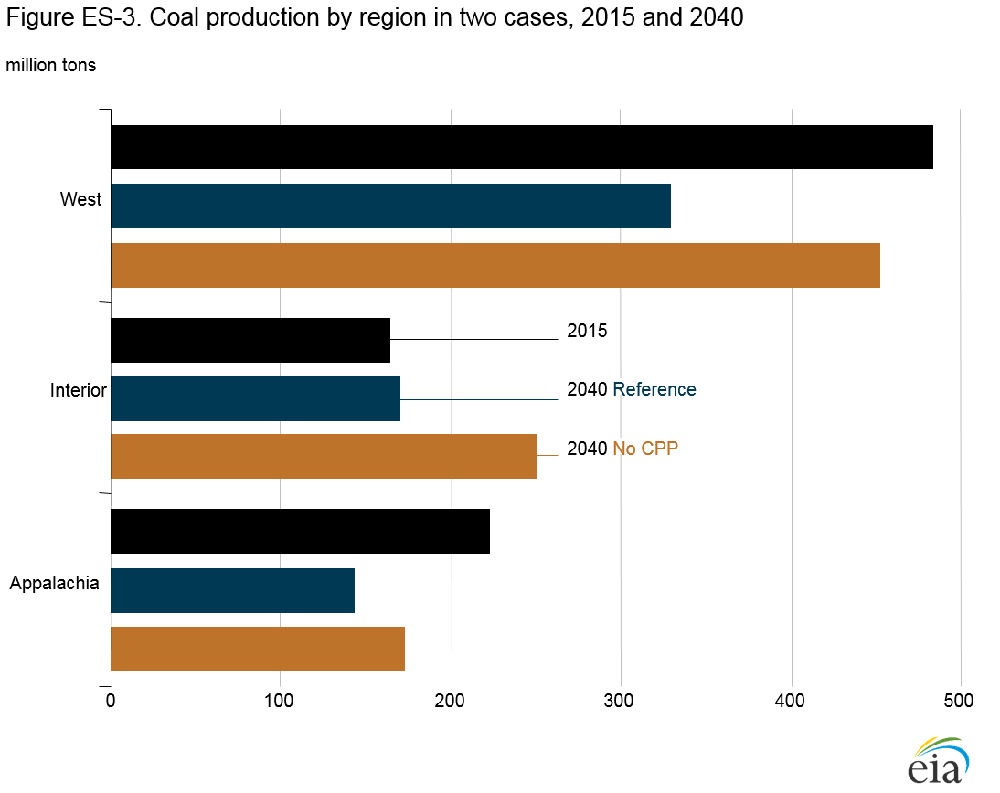
figure data
Electricity demand growth slows as more on-site generation reduces the need for central-station generation
The extension of federal tax credits for PV systems, combined with a continued decline in PV prices, spurs the adoption of residential and commercial PV in the AEO2016 Reference case (Figure ES-4). Installed residential PV capacity increases by an average of 10%/year from 2015–40, while installed commercial PV capacity increases by an average of 6%/year. In 2040, generation from residential systems totals 90 billion kWh, and generation from commercial systems totals 37 billion kWh in the Reference case. Without the electricity generated by residential PV systems that is used onsite, electricity sales to residential customers would be nearly 6% higher in 2040. In addition, net PV generation accounts for more than 2% of commercial sector electricity sales in 2040.
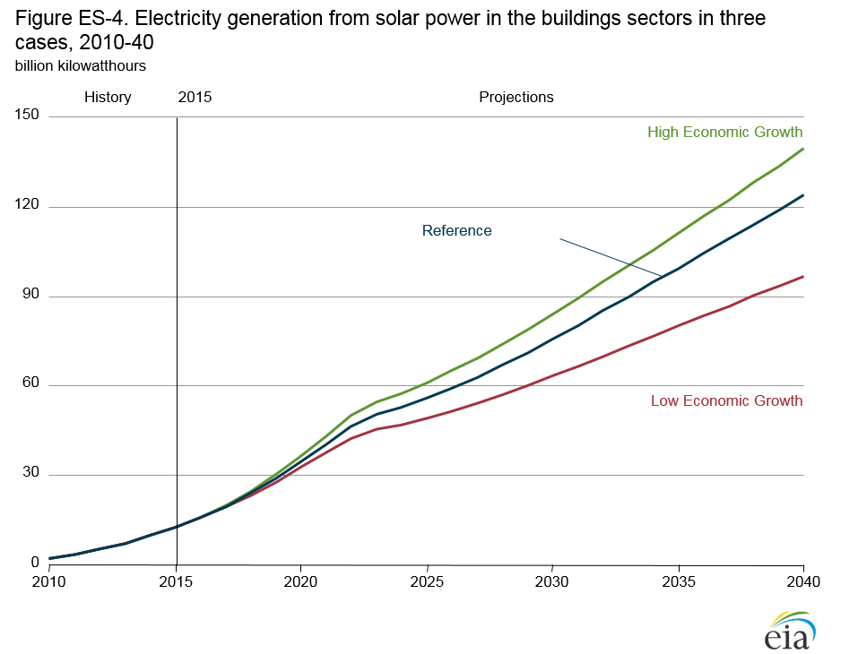
figure data
Spurred by higher energy demand and lower interest rates in the High Economic Growth case, solar PV net generation is 16% higher in the residential sector and 4% higher in the commercial sector in 2040 than in the Reference case. With the higher level of total electricity generation in the High Economic Growth case, residential electricity sales back to the grid are 15% higher in 2040 than in the Reference case. In the Low Economic Growth case, solar PV net generation is 30% lower in the residential sector and 4% lower in the commercial sector in 2040 than in the Reference case.
After 2017, U.S. oil production increases as prices rise
Total U.S. oil production in the AEO2016 Reference case falls from 9.4 million barrels per day (b/d) in 2015 to 8.6 million b/d in
2017. After 2017, the total production grows to 11.3 million b/d in 2040 as real (2016 dollars) crude oil prices recover from an
annual average of less than $50/barrel (b) in 2017 to more than $130/b in 2040 (Figure ES-5). The Lower 48 states lead the
increase in crude oil production, which results largely from higher oil prices, continued advances in industry practices, and further
development of technologies that reduce costs and allow for increased recovery of tight oil resources.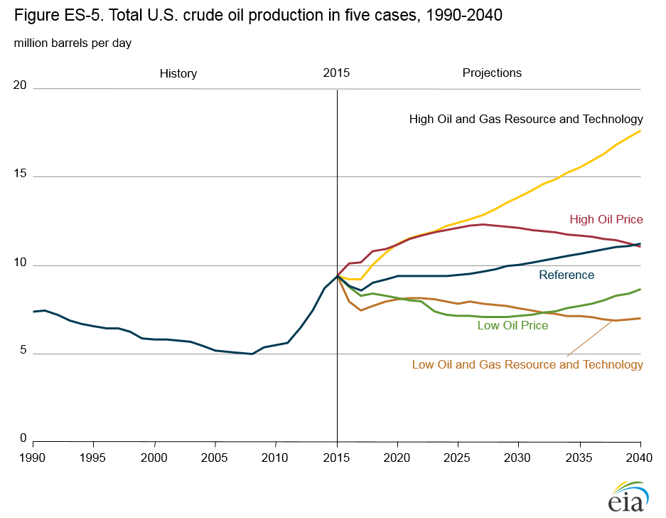
figure data
The Bakken, Western Gulf Basin (including the Eagle Ford play), and Permian Basin lead the continued development of tight oil resources in the Lower 48 states in the Reference case. With the recent decline in oil prices, tight oil production shows the largest reduction, from 4.9 million b/d in 2015 to 4.2 million b/d in 2017, before increasing to 7.1 million b/d in 2040. After 2017, higher oil prices, as well as ongoing exploration, appraisal, and development programs that expand operator knowledge about producing reservoirs, could result in the identification of additional tight oil resources and the development of technologies that reduce costs and increase oil recovery.
In the Lower 48 states, offshore production (which is less sensitive to short-term price movements than onshore production),
increases to 2.0 million b/d in 2021, led by new deepwater projects in the Gulf of Mexico, including the Heidelberg and Appomattox
fields that are scheduled to begin operations in 2016 and 2017, respectively. After 2021, Lower 48 offshore crude oil production
declines to roughly 1.6 million b/d in 2030 and remains at about that level through 2040, as production from newly developed
fields is offset by declines in legacy fields.
Lower 48 onshore crude oil production using CO2-enhanced oil recovery increases from 0.3 million b/d in 2015 to 0.7 million b/d in 2040 as oil prices rise and affordable sources of CO2 become available. Both onshore and offshore production in Alaska continue to decline, from a total of nearly 0.5 million b/d in 2015 to less than 0.2 million b/d in 2040.
U.S. natural gas production continues to rise despite low or moderately rising prices
Total U.S. dry natural gas production increases in the Reference case from 27.2 trillion cubic feet (Tcf) in 2015 to 42.1 Tcf in 2040, while average annual U.S. natural gas prices at the Henry Hub (in 2015 dollars) remain at about $5.00/million British thermal units (Btu) (Figure ES-6). Although natural gas prices remain relatively low and stable, projected development of natural gas resources in shale gas and tight oil plays, tight gas, and offshore increases as a result of abundant domestic resources and technology improvements.
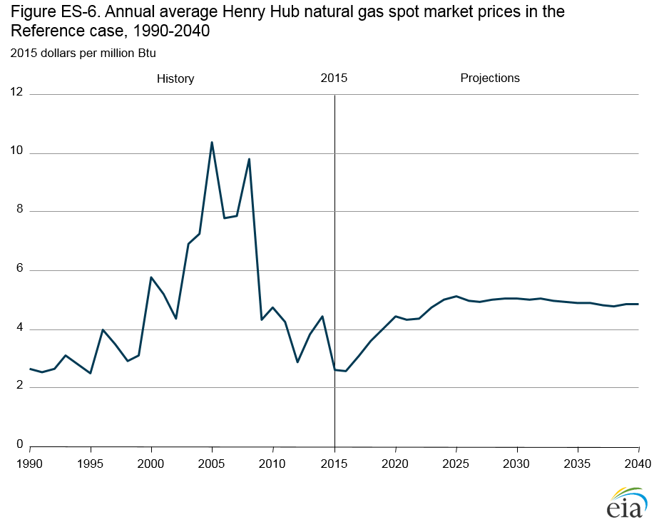
figure data
Production from shale gas and tight oil plays leads the increase in natural gas production in the Reference case from 13.6 Tcf in 2015 to 29.0 Tcf in 2040, as their share of total U.S. dry natural gas production grows from 50% in 2015 to 69% in 2040 (Figure ES-7). Shale gas and tight oil plays are resources in low-permeability reservoirs. They include the Sanish-Three Forks Formation beneath the Bakken, Eagle Ford, Woodford, Austin Chalk, Spraberry, Niobrara, Avalon/Bone Springs, and Monterey formations.
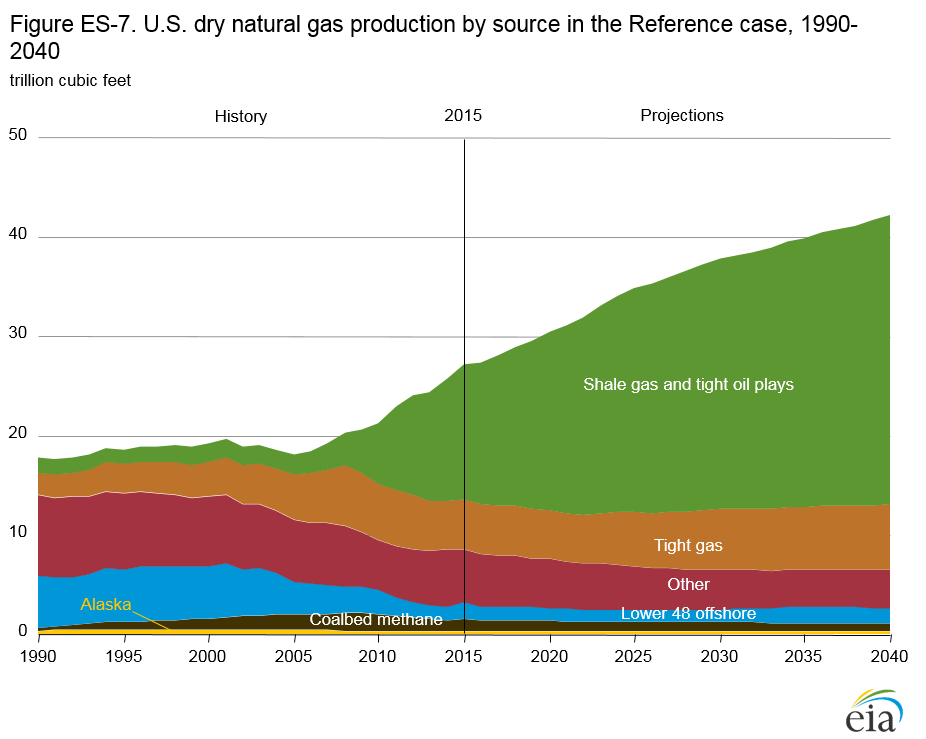
figure data
U.S. offshore natural gas supply, after declining from 2015 to 2016 to around 1.4 Tcf, remains stable from 2015–20 in the Reference case, then falls to 1.2 Tcf in 2023, reflecting declines in production from legacy offshore fields. After 2027, as increased production from new discoveries offsets the decline in legacy fields, offshore natural gas production increases to 1.7 Tcf in 2040.
Growing natural gas demand in the industrial and electric power sectors and increasing exports of liquefied natural gas (LNG) place upward pressure on domestic natural gas prices. Improvements in drilling technology allow production to keep pace with demand (both for domestic consumption and for export), resulting in relatively stable prices throughout the projection period.
Technology improvements increase U.S. production from tight and shale formations
Growth in U.S. oil and natural gas resources (proved reserves and technically recoverable resources) and cumulative production have averaged 1.8%/year and 2.5%/year for crude oil and natural gas, respectively, from 1990–2005, and 3.6%/year and 3.1%/year from 2005–15. Examples of technology improvements include better rigs and drill bits that can drill wells faster at lower unit costs, improved hydraulic fracturing techniques that expose more of the rock to the well, better control of the drill bit path, and better offshore rigs and platforms that can reach great depths and handle extreme pressures and temperatures. Multi well pad drilling and improvements in logistics also have contributed to the cost reductions. These technology improvements have allowed, and are likely to continue to allow, the expansion of tight and shale gas production, as indicated in Figure ES-7.
The Reference case incorporates assumptions about changes in upstream technologies and industry practices in developing tight oil, tight gas, and shale gas plays. The plays are divided into two tiers, with different aggregate technology change rates depending on their levels of development, which are based on the potential effects of future breakthrough technologies on resource recovery rates and drilling and operating costs, particularly in areas that are less developed.
Natural gas trade and LNG exports depend on the differential between U.S. and world natural gas prices
The size of the domestic oil and natural gas resource and technology improvement rates affect the ability of U.S. producers to supply natural gas and the cost of domestic supplies. Lower world oil prices reduce the competitiveness of U.S. LNG in world markets, while exports to Canada and Mexico are affected more directly by U.S. natural gas prices, with exports falling when natural gas prices rise and increasing when natural gas prices fall.
In the Reference case, total U.S. exports of natural gas increase to 8.9 Tcf in 2040, with LNG exports of 6.7 Tcf (Figure ES-8). In the High Oil Price case, with higher international natural gas prices, particularly in Asia, U.S. LNG exports are more competitive. The greater growth in LNG exports in the High Oil Price case increases the call on domestic production, which in turn leads to higher domestic natural gas prices. The increased demand for LNG exports is offset somewhat by lower natural gas exports to Canada and Mexico as prices rise. U.S. exports of natural gas increase in the High Oil Price case to 12.5 Tcf in 2035 and remain near that level through 2040, and LNG exports increase to 10.5 Tcf in 2040. In the Low Oil Price case, where there is less incentive for LNG exports, total U.S. exports of natural gas increase only to 6.8 Tcf in 2040, with LNG exports of 5.6 Tcf.
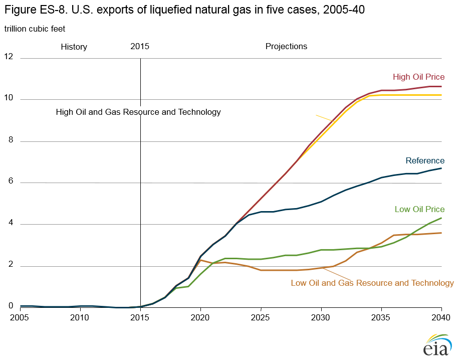
figure data
In the High Oil and Gas Resource and Technology case, lower production costs lead to more natural gas production. With assumptions of a larger resource base and more rapid improvement in production technologies in the High Oil and Gas Resource and Technology case than in the Reference case, the United States becomes a net exporter of natural gas to Canada in 2029 and U.S. LNG exports increase to 10.3 Tcf in 2035–40. In the Low Oil and Gas Resource and Technology case, U.S. natural gas production is lower because of a smaller resource base and slower improvement in technology than in the Reference case. In this case, U.S. natural gas exports total 4.7 Tcf in 2020, with LNG exports of 2.3 Tcf in that year, and remain at roughly the same level through 2034 before declining slightly through 2040.
California zero-emission vehicle program drives increasing sales of zero-emissions vehicles and transitional zero-emissions vehicles
The California zero-emissions vehicles (ZEV) (electric and hydrogen fuel cell) program issued in July 2014 is part of California’s
Advanced Clean Cars Program. The Advanced Clean Cars Program was adopted in the Annual Energy Outlook as part of
AEO2016. The Advanced Clean Cars Program combines control of Clean Air Act-defined criteria emissions, including greenhouse
gases, and the ZEV program. The program was enacted in addition to national corporate average fuel economy standards,
primarily to increase the percentage of ZEVs and transitional zero-emissions vehicles (TZEV)s (plug-in hybrid-electric and
hydrogen internal combustion engine vehicles) to combat California-specific smog and emissions concerns. Nine other states
have adopted the California ZEV program. California and those 9 states represented 33% of the total U.S. market for new lightduty
vehicles in 2015.
Manufacturers are required to produce ZEV credits equal to a percentage of their average conventional vehicle sales. Large manufacturers (more than 20,000 annual sales in California) are required to produce a minimum percentage of ZEVs. The remainder of the credits can be earned with TZEVs. Starting in model year (MY) 2018, manufacturers are required to produce ZEV credits equal to 4.5% of their conventional vehicle sales, and in MY 2025 the percentage requirement increases to 22%, with a minimum of 16% ZEVs. The credits awarded vary, depending on the vehicle type and driving range. With limitations, credits may be traded between manufacturers and between states, and requirements are lessened for smaller manufacturers.
The updated California ZEV program for MY 2018 and later drives increasing ZEV sales. In the AEO2016 Reference case, total U.S. annual sales increase to 590,000 ZEVs and 348,000 TZEVs in 2025, partly as a result of the ZEV program (Figure ES-9). Combined ZEV and TZEV sales account for 6% of national light-duty vehicle (LDV) sales in 2025, the first year of complete implementation. In 2025, states in the ZEV program account for 415,000 combined ZEV and TZEV sales, or 50% of total ZEV and TZEV sales. Currently, ZEV and TZEV sales in covered states account for 39% of total ZEV and TZEV sales. This represents compliance, as the credits earned would meet the credit percentage required. By 2040, nationwide ZEV and TZEV sales reach a combined 1.1 million sales.
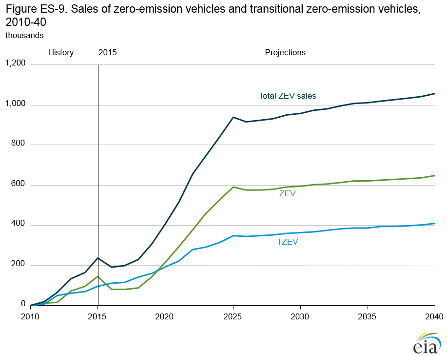
figure data
Proposed medium- and heavy-duty vehicle Phase 2 standards reduce diesel fuel demand and carbon dioxide emissions
AEO2016 includes a Phase 2 Standards case that analyzes the estimated effects of more stringent regulations for fuel consumption and greenhouse gas emissions from medium- and heavy-duty vehicles. The proposed Phase 2 standards, issued jointly by the National Highway Transportation Safety Administration and the EPA, are a continuation of the Phase 1 standards, which expire at the end of MY 2018. The Phase 2 standards would take effect in MY 2021, with total implementation in MY 2027, addressing vehicles in four discrete categories: combination tractors, trailers, heavy-duty pickup trucks and vans, and vocational vehicles [5].
In the AEO2016 Phase 2 Standards case, the vehicle categories are reduced to three gross vehicle weight groups: Class 3, Classes 4–6, and Classes 7–8. Compared with average new vehicle fuel economy in 2027 in the AEO2016 Reference case, average new vehicle fuel economy in the Phase 2 Standards case for combined Classes 3–8 increases by 28%. After 2027, the standards remain constant, but technology adoption continues as new cost-effective technologies become available. In 2040, the combined average fuel economy for vehicles in all three categories in the Phase 2 Standards case is 10.6 miles per gallon (mpg)—compared to 8.0 mpg in the Reference case—a 33% improvement. Higher on-road fuel economy of the medium- and heavy-duty truck stock, which is slowly affected by the introduction of new vehicles, reduces energy consumption in the Phase 2 Standards case by 22% in 2040 compared with the Reference case level. Cumulative medium- and heavy-duty vehicle consumption of diesel fuel from 2021–40 in the Phase 2 Standards case is 2.5 billion barrels lower than in the Reference case (Figure ES-10). Consequently, cumulative CO2 emissions in the transportation sector from 2021–40 are 1,186 million metric tons (3%) lower in the Phase 2 Standards case than in the Reference case.
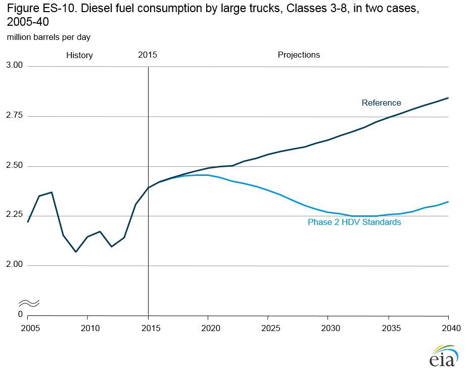
figure data
Class 2b pickup trucks and vans are included in the Phase 2 Standards case; however, the fuel economy and fuel consumption for these vehicles are not reported individually in AEO2016. Class 2b is included in the data for total transportation fuel consumption and emissions. Trailers are not explicitly modeled in the Phase 2 Standards case because of a lack of inventory and usage data. Despite improvements since the start of Phase 1, many limitations still exist in the availability of data on the technologies used to meet the Phase 1 compliance standards and on Phase 2 vehicle baseline performance, which makes it difficult to estimate future energy effects. The EPA baseline for Phase 2 is established by assuming compliance with Phase 1 in MY 2017, which is evaluated differently. Therefore, it is unknown whether Phase 1-compliant vehicles in MY 2017 accurately represent the proposed Phase 2 baseline. The discussion of the Phase 2 Standards case in the AEO2016 Issues in Focus details the proposed standards, the vehicles affected, and regulatory and modeling issues.
With lower natural gas prices, industrial sector energy consumption increases through 2040
The AEO2016 Reference case projects robust growth in industrial energy use of natural gas as shipments increase over the 2015–40 period. Low natural gas prices and increased availability of natural gas and related resources, including hydrocarbon gas liquids (HGL), benefit the U.S. industrial sector and the manufacturing sector, in particular, in several ways. Natural gas is used as a fuel to produce heat and to generate electricity. Natural gas is also used, along with HGL products, as a feedstock to produce chemicals, pharmaceuticals, and plastics. Low energy prices result in more rapid economic growth and increasing demand for industrial products.
Industrial shipments and improvements in energy efficiency over time have significant effects on energy consumption in the industrial sector in the Reference case. As a result of efficiency improvements, industrial energy consumption grows more slowly than shipments. Total delivered energy consumption in the industrial sector grows by 1.2%/year from 2015–40. In the near term, energy consumption grows by 1.8%/year in the Reference case between 2015 and 2025, more than twice the rate from 2025 to 2040, as a result of more rapid growth in shipments in the near term, 2.4%/year from 2015–25, compared with 1.5%/year from 2025–40.
Growth in industrial production leads to increased natural gas consumption in the industrial sector, from 9.4 quadrillion Btu in 2015 to 11.3 quadrillion Btu in 2025 and to 12.9 quadrillion Btu in 2040. The projected rate of growth in natural gas consumption, at 1.3%/year from 2015–40, is slightly higher than the rate of growth for total industrial sector energy consumption. The bulk chemical industry is the largest user of natural gas in the industrial sector. Other large users include refining, food products, mining, iron and steel, paper products, and metal-based durables.
The bulk chemical industry accounts for much of the growth in industrial energy consumption, with a competitive price advantage for feedstocks, especially HGL, reflected in the growth of shipments from 2015–40. In the Reference case, energy consumption in the bulk chemical industry grows by 80% from 2015–40, compared with 18% for other manufacturing and 30% for nonmanufacturing industries (Figure ES-11). Energy consumption growth in the bulk chemical industry is concentrated in the 2015–25 period (4.3%/year, compared with 1.1%/year from 2025–40), and shipments of bulk chemicals increase by 4.8%/year from 2015–25, compared with 1.4%/year from 2025–40.
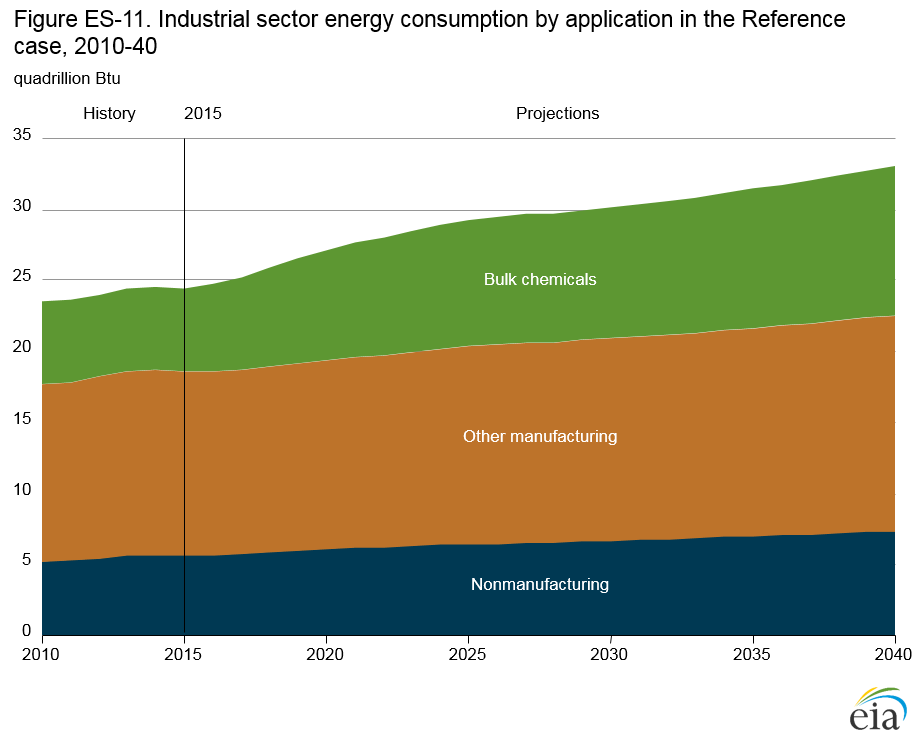
figure data
Different assumptions about the rate of economic growth and the levels of oil and natural gas prices also affect energy consumption growth rates in the industrial sector (Figure ES-12). In both the High Economic Growth case and the High Oil Price case, energy consumption growth slows in the later years of the projections. In the High Oil Price case, energy consumption growth in the mining industry is considerably higher than in the Reference case and higher than in the High Economic Growth case, as shipments from the oil and gas extraction industry grow rapidly when energy prices are high. Energy consumption in the bulk chemical industry grows by more than 2%/year in the Reference, High Oil Price, Low Economic Growth, and High Economic Growth cases.
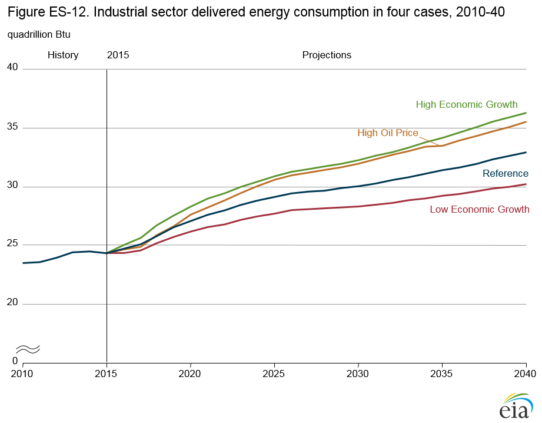
figure data
Energy-related CO2 emissions vary widely with different assumptions about economic growth, energy prices, and policies
The AEO2016 Reference case assumes that current laws and regulations remain in effect through 2040; however, the status of the CPP, which is on hold pending judicial review, is uncertain. In the Reference case, the CPP is assumed to be implemented as scheduled, using mass-based standards that impose limits on CO2 emissions from fossil fuel-fired generators. The No CPP case assumes that no federal carbon reduction program is implemented.
Across the alternative AEO2016 cases, total energy-related CO2 emissions in 2040 vary by more than 800 million metric tons, depending on the assumptions in each case about economic growth, energy prices, and energy policies (Figure ES-13). In the High Economic Growth case, which includes the CPP, total emissions in 2040 are close to the No CPP case total of 5,468 million metric tons because emissions from sectors other than electric power increase as the economy grows. In the Extended Policies case, CO2 emissions fall to 4,623 million metric tons in 2040, which is 23% lower than the 2005 total. The Extended Policies case assumes that existing policies and regulations remain in effect or are extended beyond sunset dates specified in current regulation; that efficiency policies—including corporate average fuel economy standards, appliance standards, and building codes—are expanded beyond current provisions; and that EPA CPP regulations that reduce CO2 emissions from electric power generation are tightened after 2030. As a result, energy-related CO2 emissions in 2040 in the Extended Policies case are 845 million metric tons lower than in the No CPP case.
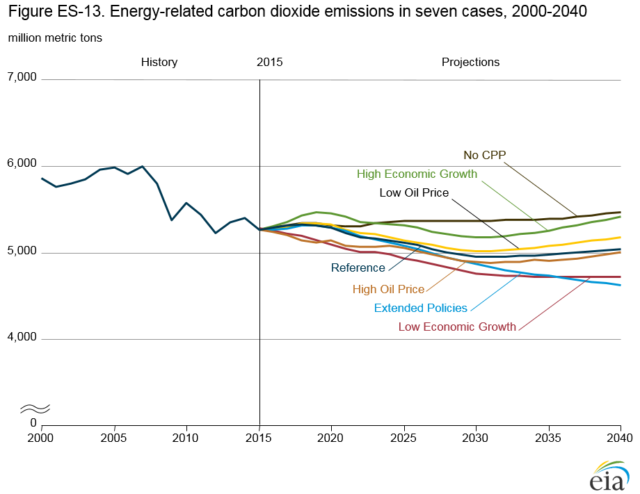
figure data
Variations in energy prices have a smaller effect than the CPP requirements on total CO2 emissions. Because the CPP imposes a limit on CO2 emissions in the electric power sector that are met in all cases, differences in energy-related emissions are seen only in the end-use sectors. As a result, the difference in 2040 CO2 emissions between the Low Oil Price and High Oil Price cases is smaller than the difference between the No CPP case and the Extended Policies case.
Endnotes
- U.S. Environmental Protection Agency, “Standards of Performance for Greenhouse Gas Emissions From New, Modified, and Reconstructed Stationary Sources: Electric Utility Generating Units” (Washington, DC: October 23, 2015) https://www.federalregister.gov/articles/2015/10/23/2015-22837/standards-of-performance-for-greenhouse-gas-emissionsfrom-new-modified-and-reconstructed-stationary; and U.S. Environmental Protection Agency, “Carbon Pollution Emission Guidelines for Existing Stationary Sources: Electric Utility Generating Units” (Washington, DC: October 23, 2015) https://www.federalregister.gov/articles/2015/10/23/2015-22842/carbon-pollution-emission-guidelines-for-existing-stationarysources-electric-utility-generating.
- California Environmental Protection Agency, Air Resources Board, “Zero-Emission Vehicle Standards for 2018 and Subsequent Model Year Passenger Cars, Light-Duty Trucks, and Medium-Duty Vehicles” (Sacramento, CA: July 10, 2014), http://www.arb.ca.gov/msprog/zevprog/zevregs/1962.2_Clean.pdf.
- U.S. Environmental Protection Agency and National Highway Transportation Safety Administration, “Greenhouse Gas Emissions and Fuel Efficiency Standards for Medium- and Heavy-Duty Engines and Vehicles – Phase 2” (Washington, DC: June 19, 2015), http://www.nhtsa.gov/fuel-economy.
- For example, whether or not to engage in interstate trading programs, to allow credits for outside-the-fence options like energy efficiency, to auction allowances or to allocate them freely if electing a mass-based approach, how to credit renewable energy projects under a rate-based program, and other options.
- Vocational vehicles include any medium- or heavy-duty vehicle that is not a heavy-duty pickup or van or a semi-truck tractor with a 5th wheel trailer attachment (including vehicles like box or delivery trucks, buses, dump trucks, tow trucks, refuse haulers, and cement trucks).
Sections in this chapter
- The Clean Power Plan's requirement to reduce carbon dioxide emissions accelerates the shift in the generation mix
- How the states implement the Clean Power Plan influences its effect on electricity generators
- The coal-fired generation share of total electricity production continues to decline, even in the absence of the Clean Power Plan, and natural gas becomes the predominant fuel for electricity generation
- All coal supply regions are affected—though not equally—when the Clean Power Plan is implemented
- Electricity demand growth slows as more on-site generation reduces the need for central-station generation
- After 2017, U.S. oil production increases as prices rise
- U.S. natural gas production continues to rise despite low or moderately rising prices
- Technology improvements increase U.S. production from tight and shale formations
- Natural gas trade and LNG exports depend on the differential between U.S. and world natural gas prices
- California zero-emission vehicle program drives increasing sales of zero-emissions vehicles and transitional zero-emissions vehicles
- Proposed medium- and heavy-duty vehicle Phase 2 standards reduce diesel fuel demand and carbon dioxide emissions
- With lower natural gas prices, industrial sector energy consumption increases through 2040
- Energy-related CO2 emissions vary widely with different assumptions about economic growth, energy prices, and policies
Interactive Table Viewer ›
Provides custom data views of all AEO2016 cases. All available cases can be charted and the data for them downloaded.